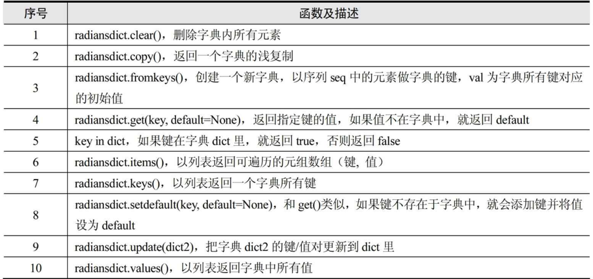

Contents
1.6. 字典 Dict¶
dict()函数创建一个空字典，字典是无序的。
1.6.1. 1.查询表¶
1.1 字典的内置方法¶
dict.clear() # 删除字典中所有元素
dict.copy() # 返回字典(浅复制)的一个副本
dict.fromkeys(seq,val=None) # 创建并返回一个新字典,以seq中的元素做该字典的键,val做该字典中所有键对的初始值
dict.get(key,default=None) # 对字典dict中的键key,返回它对应的值value,如果字典中不存在此键,则返回default值
dict.has_key(key) # 如果键在字典中存在,则返回True, python3中用in和not in代替了
dict.items() # 返回一个包含字典中键、值对元组的列表
dict.keys() # 返回一个包含字典中键的列表
dict.iter() # 方法iteritems()、iterkeys()、itervalues()与它们对应的非迭代方法一样,不同的是它们返回一个迭代子,而不是一个列表
dict.pop(key[,default]) # 和方法get()相似.如果字典中key键存在,删除并返回dict[key]
dict.setdefault(key,default=None) # 和set()相似,但如果字典中不存在key键,由dict[key]=default为它赋值
dic[key] = [value] #替代了setdefault方法，直接键对应值进行添加字典
dict.update(dict2) # 将字典dict2的键值对添加到字典dict
dict.values() # 返回一个包含字典中所有值得列表
dict([container]) # 创建字典的工厂函数。提供容器类(container),就用其中的条目填充字典
len(mapping) # 返回映射的长度(键-值对的个数)
hash(obj) # 返回obj哈希值,判断某个对象是否可做一个字典的键
del dict["key"] # 删除具有指定键的元素
代码示例1
#!/usr/bin/env python
#-*- coding:utf8 -*-
ab = { 'Swaroop': 'swaroopch@byteofpython.info','Larry' : 'larry@wall.org'}
ab['c'] = 80
print(ab)
del ab['c']
print(ab)
li = ["a","b","c"]
print(dict(enumerate(li)))
#定义字典
word = {"che":"车","chen":"陈","cheng":"称","chi":"吃"}
print(word)
key = ["che","chen","cheng","chi"] #定义索引列表
vlaue = ["车", "陈","称","吃"] #定义汉字列表
zip1 = dict(zip(key,vlaue)) #将对象转换为字典
print(zip1)
print(zip1["che"])
print(zip1.get("chen")) #键存在，返回值
print(zip1.get("chenj")) #键不存在，返回None
print(zip1.get("chene","查无此人")) #键不存在，返回默认值
dict1 = {}
#dict1.fromkeys()
name = ["hujianli","jianli","xiaojian","jianlihu"]
dictionary = dict.fromkeys(name) #创建一个只有键的字典
print(dictionary)
In [5]: s = dict.fromkeys(("hujianli","xiaojian"),"goodboy")
In [6]: s
Out[6]: {'hujianli': 'goodboy', 'xiaojian': 'goodboy'}
In [7]: s1 = dict.fromkeys((12,23))
In [8]: s1
Out[8]: {12: None, 23: None}
In [9]: s2 = dict.fromkeys(("a","b"))
In [10]: s2
Out[10]: {'a': None, 'b': None}
#del dictionary #删除字典
dictionary.clear() #清除字典当中的所有元素，变成一个空字典
print(dictionary)
#遍历字典的键和值
dic2 = {"依梦":"水瓶座","胡建力":"巨蟹座","小健":"狮子座"}
"""
dic2.items()
"""
#遍历键和值
for key1, vlaue1 in dic2.items():
print(key1,'=====>',vlaue1)
#遍历键
for key1 in dic2.keys():
print("key is {}".format(key1))
#遍历值
for vlaue in dic2.values():
print("value is {}".format(vlaue))
hu1 = list(zip(['a','b','c'],[1,2,3]))
print(hu1)
hu2 = dict(zip(['a','b','c'],[1,2,3]))
print(hu2)
stu1={'学号':'10001','姓名':'张晓光','性别':'男','年龄':20}
stu1['年龄']=30
print(stu1['性别'])
print(stu1)
# stu1={'学号':'10001','姓名':'张晓光','姓名':'李三','年龄':20}
# print(stu1[1])
day={1:'星期一',2:'星期二',3:30,'四':'星期四'}
print(day['四'])
print(day[2])
dict1={'姓名':'张晓光','年龄':20}
print('1.所有键：',dict1.keys())
print('2.所有值：',dict1.values())
print('3.所有键-值：',dict1.items())
dict2=dict1
dict3=dict1.copy()
print('4.浅拷贝和深拷贝：',id(dict1),id(dict2),id(dict3))
score1=(1,2,3,4)
dict4=dict1.fromkeys(score1)
print('5.通过元组创建字典：',dict4)
print('6.get年龄：',dict1.get('年龄'))
dict1.setdefault('年纪',30)
print('7.setdefault年纪：',dict1)
dict5={'成绩':'优良'}
dict1.update(dict5)
print('8.update成绩：',dict1)
# 删除字典
dict1={'姓名':'张晓光','年龄':20}
str1=dict1.pop('姓名')
print(str1)
print(dict1)
dict1={'姓名':'张晓光','年龄':20}
if '姓名' in dict1:
print(dict1['姓名'])
if '性别' not in dict1:
dict1.setdefault('性别','男')
print(dict1)
1.2 添加/修改/删除字典元素¶
代码示例
#!/usr/bin/env python
#-*- coding:utf8 -*-
#向字典里面添加元素
dict1 = {"1":"hujianli","2":"xiaojian","3":"xiaojian3"}
dict1["4"] = "xiaojian4"
print(dict1)
#修改字典的元素
dict1['1'] = "hujianli1"
dict1['2'] = "hujianli2"
print(dict1)
#删除元素
del dict1['1']
del dict1['2']
#进行判断，判断键是否在字典当中
if "1" in dict1:
del dict1['1']
print(dict1)
>>> dict.fromkeys(['a', 'b'], 0)
{'a': 0, 'b': 0}
1.3 字典推导式¶
#!/usr/bin/env python
#-*- coding:utf8 -*-
#推导式可以快速生成字典
'''
{键表达式：值表达式 for 循环}
'''
import random
#生成随机数字典，键为1~4，值为10~100的随机数
randomdict = {i: random.randint(10,100) for i in range(1,5)}
print(randomdict)
name = ["依梦","冷依依","香菱","戴兰"]
sign = ["水瓶","射手","双鱼","双子"]
dict1 = {i:j for i,j in zip(name,sign)}
print(dict1)
1.4 字典的重访嵌套¶
In [17]: rec = {"name":{"first":"Bob","hujianli":"smith","job":["dev","mgr"],"age":"22"}}
In [19]: rec["name"]
Out[19]: {'age': '22', 'first': 'Bob', 'hujianli': 'smith', 'job': ['dev', 'mgr']}
In [20]: rec["name"]["job"]
Out[20]: ['dev', 'mgr']
In [21]: rec["name"]["job"][1]
Out[21]: 'mgr'
In [22]: rec["name"]["job"][-1]
Out[22]: 'mgr'
In [24]: rec["name"]["job"].append("IT")
In [25]: rec
Out[25]:
{'name': {'age': '22',
'first': 'Bob',
'hujianli': 'smith',
'job': ['dev', 'mgr', 'IT']}}
1.5 字典格式化字符串¶
temp = "书名是：%(name)s,价格是:%(price)010.2f,出版社是:%(publish)s"
book1 = {'name': "疯狂python讲义", 'price': 88.9, 'publish': '电子社1'}
print(temp % book1)
book2 = {'name': "疯狂java讲义", 'price': 78.9, 'publish': '电子社2'}
print(temp % book2)
1.6.2. 2. 用字典分支构建程序¶
#!/usr/bin/env python
#-*- coding:utf8 -*-
import random
#定义3个分支函数
def print_a():
print("路径分支A")
def print_b():
print("路径分支B")
def print_c():
print("路径分支C")
if __name__ == '__main__':
path_dict = {}
path_dict['a'] = print_a
path_dict['b'] = print_b
path_dict['c'] = print_c
paths = 'abc'
for i in range(4):
path = random.choice(paths)
print("选择了路径:",path)
path_dict[path]()
输出信息
选择了路径: a
路径分支A
选择了路径: b
路径分支B
选择了路径: b
路径分支B
选择了路径: c
路径分支C
1.6.3. 3.字典键值判断¶
##不推荐
if my_dict.has_key(key):
# ...do something with d[key]
##推荐
if key in my_dict:
# ...do something with d[key]
1.6.4. 4. 字典get和setdefault方法¶
##不推荐
navs = {}
for (portfolio, equity, position) in data:
if portfolio not in navs:
navs[portfolio] = 0
navs[portfolio] += position * prices[equity]
##推荐
navs = {}
for (portfolio, equity, position) in data:
# 使用 get 方法
navs[portfolio] = navs.get(portfolio, 0) + position * prices[equity]
# 或者使用 setdefault 方法
navs.setdefault(portfolio, 0)
navs[portfolio] += position * prices[equity]
1.6.5. 5. OrderedDict¶
Python 3.7或更高版本，字典类型新增了有序特性。
但如果你使用的Python版本没有那么新，也可以从collections模块里方便地拿到另一个有序字典对象OrderedDict，它可以在Python 3.7以前的版本里保证字典有序。
OrderedDict 也是dict的子类，其最大特征是：它可以“维护”添加key-value对的顺序。 就是先添加的key-value对排在前面，后添加的key-value对排在后面。
由于OrderedDict能维护key-value对的添加顺序，因此即使两个OrderedDict中的key-value对完全相同， 但只要它们的顺序不同，程序在判断它们是否相等时也依然会返回false。
from collections import OrderedDict
# 创建OrderedDict 对象
dx = OrderedDict(b=5, c=2, a=7)
print(dx) #OrderedDict([('b', 5), ('c', 2), ('a', 7)])
d = OrderedDict()
# 向OrderedDict中添加key-value
d['python'] = 89
d['swift'] = 92
d['kotlin'] = 97
d['Go'] = 87
# 变量OrderedDict的key-value
for k, v in d.items():
print(k, v)
'''
python 89
swift 92
kotlin 97
Go 87
'''
# 创建普通的dict对象
my_data = {'Python': 20, 'Swift':32, 'Kotlin': 43, 'Go': 25}
# 创建基于key排序的OrderedDict
d1 = OrderedDict(sorted(my_data.items(), key=lambda t: t[0]))
# 创建基于value排序的OrderedDict
d2 = OrderedDict(sorted(my_data.items(), key=lambda t: t[1]))
print(d1) # OrderedDict([('Go', 25), ('Kotlin', 43), ('Python', 20), ('Swift', 32)])
print(d2) # OrderedDict([('Python', 20), ('Go', 25), ('Swift', 32), ('Kotlin', 43)])
print(d1 == d2) # False
1.6.6. 6. defaultdict对象¶
defaultdict示例
使用list作为default_factory，可以很容易地将一系列键值对分组为一个值为列表字典：
>>> s = [('yellow', 1), ('blue', 2), ('yellow', 3), ('blue', 4), ('red', 1)]
>>> d = defaultdict(list)
>>> for k, v in s:
... d[k].append(v)
...
>>> sorted(d.items())
[('blue', [2, 4]), ('red', [1]), ('yellow', [1, 3])]
将default_factory设置为int可使defaultdict用于计数（如其他语言的bag或multiset）：
>>> s = 'mississippi'
>>> d = defaultdict(int)
>>> for k in s:
... d[k] += 1
...
>>> sorted(d.items())
[('i', 4), ('m', 1), ('p', 2), ('s', 4)]
当一个字母第一次遇到时，映射中缺少该字母，因此default_factory函数调用`int() <python/functions.html#int>`__以提供默认计数零。后面，这个增量操作将建立每个字母的计数。
将default_factory设置为set可使defaultdict有助于构建集合字典：
>>> s = [('red', 1), ('blue', 2), ('red', 3), ('blue', 4), ('red', 1), ('blue', 4)]
>>> d = defaultdict(set)
>>> for k, v in s:
... d[k].add(v)
...
>>> sorted(d.items())
[('blue', {2, 4}), ('red', {1, 3})]